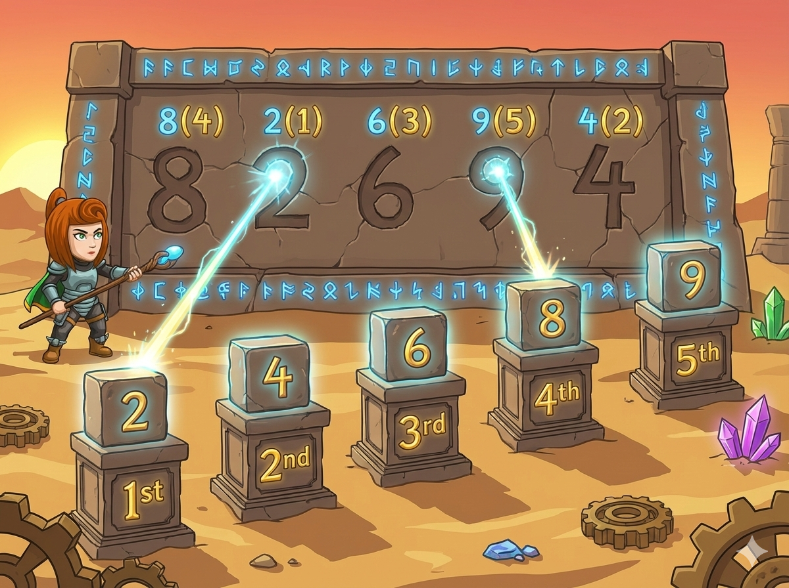

英雄来到数字遗迹，石壁上刻着 N 个互不相同的神秘数字。
遗迹的规则很简单却很严谨：
1. 把这些数字从小到大排序，最小的编号是 1，第二小是 2，以此类推……
2. 接着，按照原来的输入出现顺序，为每个数字写下它在排序后的编号（排名 rank）。
👉 任务： 完成“序号刻印”，让每个原本乱序的数字都能吐出它在有序世界里的新坐标！
第 1 行：一个整数 N (1 <= N <= 10000)
第 2 行：N 个互不相同的整数（在常用 int 范围内）。
输出一行：按原本输入的顺序，依次输出每个数字的排名，中间用空格分隔。
5 8 2 6 9 4
4 1 3 5 2

本题最大的难点在于：排序打破了原来的顺序，但题目要求按原顺序输出。
利用结构体巧妙记录三次状态：原位置、算排名、回原位，逻辑极其严密。
#include <iostream> #include <algorithm> using namespace std; // 定义遗迹节点，打包保存数据 struct node { int data; // 存储神秘数字的数值 int rank; // 最终需要的排名 int index; // 原始输入的下标位置（出生地） }; node a[10005]; int n; // 规则1：按数值大小从小到大升序排列 bool comp1(node x, node y) { return x.data < y.data; } // 规则2：按最开始输入的先后顺序复位 bool comp2(node x, node y) { return x.index < y.index; } int main() { cin >> n; for (int i = 1; i <= n; i++) { cin >> a[i].data; a[i].index = i; // 重点：刻下它最开始在第几个位置 } // 第一次魔法重排：寻找排名 sort(a + 1, a + 1 + n, comp1); // 排序之后，当前的物理下标 i 就是它从小到大的排名值！ for (int i = 1; i <= n; i++) { a[i].rank = i; } // 第二次魔法重排：重组时空，恢复原样 sort(a + 1, a + 1 + n, comp2); // 此时，队伍回到了输入状态，直接顺次输出排名 for (int i = 1; i <= n; i++) { cout << a[i].rank << " "; } return 0; }
利用 Python 高级的字典映射功能，不用破坏原数组结构就能直接隔空映射！
# 1. 读入数据规模 n = int(input()) # 2. 读入整行乱序神秘数字，保存到原数组中 original = list(map(int, input().split())) # 3. 复制一份副本并进行快速排序（从小到大） sorted_arr = sorted(original) # 4. 建立“数字 -> 排名”的映射字典 rank_map = {} for i in range(n): # 数组下标从 0 开始，所以排名需要加上 1 rank_map[sorted_arr[i]] = i + 1 # 5. 按照最初的数组顺序，逐个查表获得对应排名 result = [] for num in original: rank_value = rank_map[num] result.append(str(rank_value)) # 6. 空格切分，单行输出全部答案 print(" ".join(result))